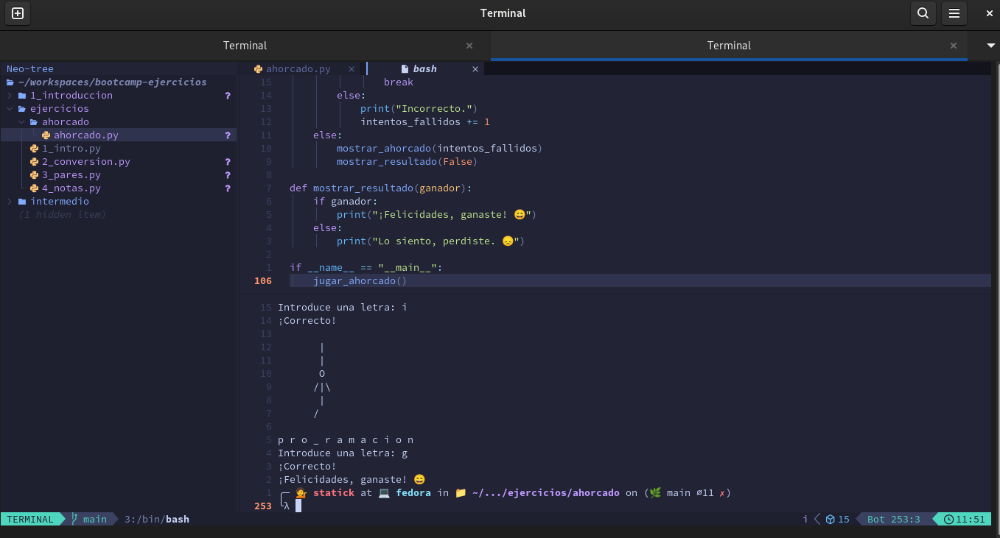

🪤✏️ Laboratorio: Construcción de un Juego de Ahorcado en Python

Objetivos del Laboratorio
- Desarrollar un juego de Ahorcado usando funciones en Python.
- Usar estructuras de datos como listas y cadenas de texto.
- Implementar lógica condicional y bucles para manejar el flujo del juego.
- Mostrar mensajes finales (con emojis) según el resultado del juego.
Prerrequisitos
Conocimiento básico de Python: funciones, listas, cadenas, condicionales y bucles.
Instalación de Python 3 en tu equipo.
Paso 1: Crear la Estructura Inicial del Proyecto
Crear un archivo de Python:
Abre tu editor de texto o IDE favorito (se recomienda utilizar Vscode) y crea un nuevo archivo llamado ahorcado.py.
Definir el objetivo del proyecto en el archivo:
Añade un comentario en la primera línea que describa el propósito del proyecto:
# Juego de Ahorcado en PythonPaso 2: Definir las Etapas del Ahorcado en ASCII
Crear la lista AHORCADO_DIBUJO:
Define las etapas progresivas del dibujo del ahorcado usando una lista de cadenas en ASCII.
Cada elemento de la lista representa una etapa del juego.
AHORCADO_DIBUJO = [
"""
|
|
|
|
""",
"""
|
|
O
|
""",
"""
|
|
O
/|
""",
"""
|
|
O
/|\\
|
""",
"""
|
|
O
/|\\
|
/
""",
"""
|
|
O
/|\\
|
/ \\
"""
]Prueba del dibujo:
Prueba imprimiendo cada elemento de la lista para asegurarte de que el dibujo es correcto.
print(len(AHORCADO_DIBUJO))
for etapa in AHORCADO_DIBUJO:
print(etapa)Nota: Puedes ejecutar el código en tu terminal o en un entorno de Python para verificar que el dibujo se imprime correctamente.
No olvides utilizar la función print() para mostrar los elementos de la lista en la consola. Y los comentarios para poder identificar cada etapa del dibujo.
Paso 3: Crear la Función para Mostrar el Dibujo del Ahorcado
Definir la función mostrar_ahorcado:
Esta función tomará el número de intentos fallidos como argumento e imprimirá la etapa correspondiente del ahorcado.
def mostrar_ahorcado(intentos_fallidos):
print(AHORCADO_DIBUJO[intentos_fallidos])Prueba de la función:
Llama a mostrar_ahorcado varias veces con diferentes valores para verificar que cada etapa se muestra correctamente.
Paso 4: Crear Funciones para el Flujo del Juego
Función para Seleccionar Palabra Aleatoria:
Define una lista de palabras para que el juego seleccione aleatoriamente una de ellas.
Usa la biblioteca random para elegir una palabra al azar.
import random
def seleccionar_palabra():
palabras = ["python", "programacion", "juego", "ahorcado", "computadora"]
return random.choice(palabras)En el código anterior, la función seleccionar_palabra devuelve una palabra aleatoria de la lista de palabras. Tambien aparece el método choice de random que selecciona una palabra aleatoria de la lista.
Función para Mostrar el Estado Actual:
Esta función mostrará el progreso actual del jugador, mostrando las letras adivinadas y guiones bajos _ para letras no adivinadas.
def mostrar_progreso(palabra, letras_adivinadas):
progreso = [letra if letra in letras_adivinadas else '_' for letra in palabra]
print(" ".join(progreso))El código anterior crea una lista de letras adivinadas y guiones bajos para las letras no adivinadas. Luego, une los elementos de la lista en una cadena con un espacio entre cada letra.
Este proceso se conoce como list comprehension y es una forma concisa de crear listas en Python.
Para ampliar la información sobre list comprehension, puedes consultar la documentación oficial de Python en el siguiente enlace: List Comprehensions
Función para Manejar el Intento del Jugador:
Define una función que reciba una letra y verifique si está en la palabra.
def intentar_letra(palabra, letra, letras_adivinadas):
if letra in palabra:
letras_adivinadas.add(letra)
return True
return FalseEn el código anterior, la función intentar_letra verifica si la letra está en la palabra y la agrega a la colección de letras adivinadas. Devuelve True si la letra está en la palabra y False si no lo está.
Paso 5: Crear la Función Principal del Juego
Configurar el Juego:
Define la función jugar_ahorcado() que controlará el flujo completo del juego.
Establece la palabra a adivinar, el número de intentos, y una colección para almacenar las letras adivinadas.
def jugar_ahorcado():
palabra = seleccionar_palabra()
letras_adivinadas = set()
intentos_fallidos = 0
max_intentos = len(AHORCADO_DIBUJO) - 1En el código anterior, la función jugar_ahorcado selecciona una palabra aleatoria, inicializa una colección de letras adivinadas, y establece el número máximo de intentos.
Ciclo del Juego:
Crea un bucle while que continúe mientras el jugador tenga intentos restantes y no haya adivinado la palabra completa.
while intentos_fallidos < max_intentos:
mostrar_ahorcado(intentos_fallidos)
mostrar_progreso(palabra, letras_adivinadas)
letra = input("Introduce una letra: ").lower()
if letra in letras_adivinadas:
print("Ya intentaste esa letra.")
continue
if intentar_letra(palabra, letra, letras_adivinadas):
print("¡Correcto!")
if all(l in letras_adivinadas for l in palabra):
mostrar_resultado(True)
break
else:
print("Incorrecto.")
intentos_fallidos += 1
else:
mostrar_ahorcado(intentos_fallidos)
mostrar_resultado(False)En el código anterior, el bucle while muestra el dibujo actual del ahorcado, el progreso del jugador y solicita una letra al jugador.
Paso 6: Crear Función de Resultado Final con Emojis
Definir mostrar_resultado:
Esta función mostrará un mensaje final con un emoji dependiendo de si el jugador gana o pierde.
def mostrar_resultado(ganador):
if ganador:
print("¡Felicidades, ganaste! 😄")
else:
print("Lo siento, perdiste. 😞")En el código anterior, la función mostrar_resultado imprime un mensaje de felicitación si el jugador gana y un mensaje de consuelo si pierde.
Paso 7: Ejecutar el Juego
Ejecutar el Juego:
Agrega una condición para ejecutar el juego cuando el archivo sea ejecutado directamente.
if __name__ == "__main__":
jugar_ahorcado()En el código anterior, la condición if name == “main”: verifica si el archivo se ejecuta directamente y llama a la función jugar_ahorcado en ese caso.
Nota: Puedes ejecutar el juego en tu terminal o en un entorno de Python para jugar al Ahorcado.
Prueba Final:
Ejecuta ahorcado.py y juega una partida completa. Verifica que los mensajes y el flujo del juego sean los correctos.
python ahorcado.pyPaso 8: Mejoras Opcionales
Añadir Validación de Entradas: Controla que el jugador solo introduzca letras válidas.
- Agregar Dificultad: Permite al jugador elegir entre palabras cortas, medias y largas.
Conclusión
Con este laboratorio, has creado un juego de Ahorcado en Python que:
Utiliza funciones para modular el código
- mostrar_ahorcado,
- seleccionar_palabra,
- mostrar_progreso,
- intentar_letra,
- jugar_ahorcado,
- mostrar_resultado
Si separas las funciones en un archivo aparte, puedes importarlas en el archivo principal.
Ejemplo:
Los archivos que son necesarios crear deben estar dentro del directorio funciones.
funciones/
__init__.py
funciones.py
ahorcado.pyEl código del archivo funciones.py debe ser el siguiente:
AHORCADO_DIBUJO = [
"""
|
|
|
|
""",
"""
|
|
O
|
""",
"""
|
|
O
/|
""",
"""
|
|
O
/|\\
|
""",
"""
|
|
O
/|\\
|
/
""",
"""
|
|
O
/|\\
|
/ \\
"""
]
def mostrar_ahorcado(intentos_fallidos):
print(AHORCADO_DIBUJO[intentos_fallidos])
import random
def seleccionar_palabra():
palabras = ["python", "programacion", "juego", "ahorcado", "computadora"]
return random.choice(palabras)
def mostrar_progreso(palabra, letras_adivinadas):
progreso = [letra if letra in letras_adivinadas else '_' for letra in palabra]
print(" ".join(progreso))
def intentar_letra(palabra, letra, letras_adivinadas):
if letra in palabra:
letras_adivinadas.add(letra)
return True
return False
def jugar_ahorcado():
palabra = seleccionar_palabra()
letras_adivinadas = set()
intentos_fallidos = 0
max_intentos = len(AHORCADO_DIBUJO) - 1
while intentos_fallidos < max_intentos:
mostrar_ahorcado(intentos_fallidos)
mostrar_progreso(palabra, letras_adivinadas)
letra = input("Introduce una letra: ").lower()
if letra in letras_adivinadas:
print("Ya intentaste esa letra.")
continue
if intentar_letra(palabra, letra, letras_adivinadas):
print("¡Correcto!")
if all(l in letras_adivinadas for l in palabra):
mostrar_resultado(True)
break
else:
print("Incorrecto.")
intentos_fallidos += 1
else:
mostrar_ahorcado(intentos_fallidos)
mostrar_resultado(False)
def mostrar_resultado(ganador):
if ganador:
print("¡Felicidades, ganaste! 😄")
else:
print("Lo siento, perdiste. 😞")
if __name__ == "__main__":
jugar_ahorcado()El archivo principal ahorcado.py debe tener el siguiente código:
from funciones import mostrar_ahorcado
from funciones import seleccionar_palabra
from funciones import mostrar_progreso
from funciones import intentar_letra
from funciones import jugar_ahorcado
if __name__ == "__main__":
jugar_ahorcado()Nota: Puedes personalizar el juego añadiendo más palabras, emojis, o mensajes según tus preferencias.
Personalizar Mensajes: Cambia los mensajes de victoria y derrota para hacerlos más divertidos.
Agregar Sonidos: Añade sonidos o efectos de sonido al juego para mejorar la experiencia del jugador.
Diseño Gráfico: Crea un diseño gráfico más elaborado para el ahorcado y las letras adivinadas.
Más Palabras: Añade más palabras al juego para aumentar la variedad y dificultad.
Que aprendimos
Funciones en Python: Cómo definir y llamar funciones en Python.
Listas y Cadenas de Texto: Cómo trabajar con listas y cadenas de texto en Python.
Lógica Condicional y Bucles: Cómo usar lógica condicional y bucles para controlar el flujo del programa.
List Comprehensions: Cómo usar list comprehensions para crear listas de forma concisa.
Importar Módulos: Cómo importar funciones de otros archivos en Python.
¡Espero que hayas disfrutado este laboratorio y te animes a personalizar el juego de Ahorcado con tus propias ideas! ¡Felicidades por completar el laboratorio!